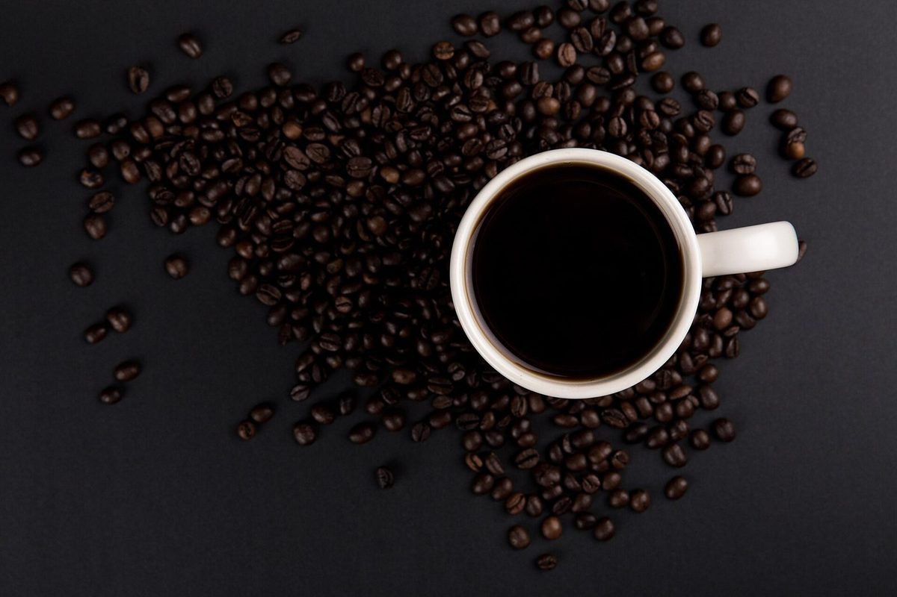
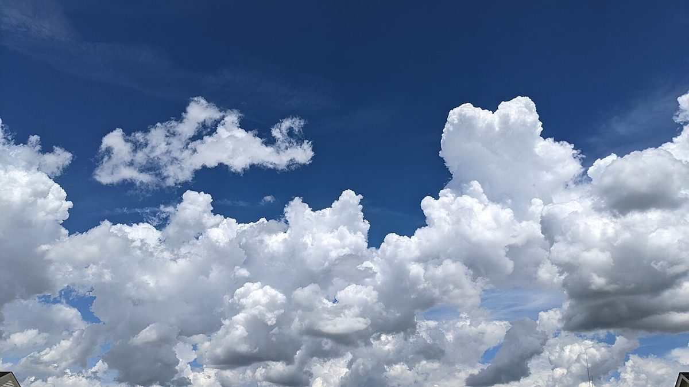

カフェ(コーヒー) / 岡山県総社市山田
DAYBYDAYCOFFEE
岡山県総社市山田にあるカフェ「DAY BY DAY COFFEE」のご案内ページです。営業時間やメニューなど詳しいことは準備中です。まずはInstagramをのぞいてみてください。
制作側の連想
三つの歯車が、噛み合って回る。
店名の由来は分かりません。制作側は「DAY BY DAY」という並びから、同じ言葉(DAY)が「BY」をはさんで左右に並ぶ形を、ひとつの歯車列に見立てました。小さな歯車(BY)が少しずつ大きな歯車(DAY)を回していく、というイメージです。お店の理念・由来とは無関係の、制作側の連想です。
歯車の三枚
DAY・BY・DAY
写真は総社市の風景ではありません。時間帯や雰囲気のイメージで選んだ、国外・撮影地不明のフリー素材です。
- DAY朝

朝のイメージ(イギリス) - BYひと息

撮影地不明のイメージ - DAY夕

夕方のイメージ(インドネシア)


ご案内
お店のこと(確認できたものだけ)
| 所在地 | 〒710-1202 岡山県総社市山田2026 |
|---|---|
| 電話 | なし |
| 営業時間 | 準備中 |
| 定休日 | 準備中 |
| ご予約 | 準備中 |
| 駐車場 | 準備中 |
| SNS | Instagram @daybyday_coffee_ |